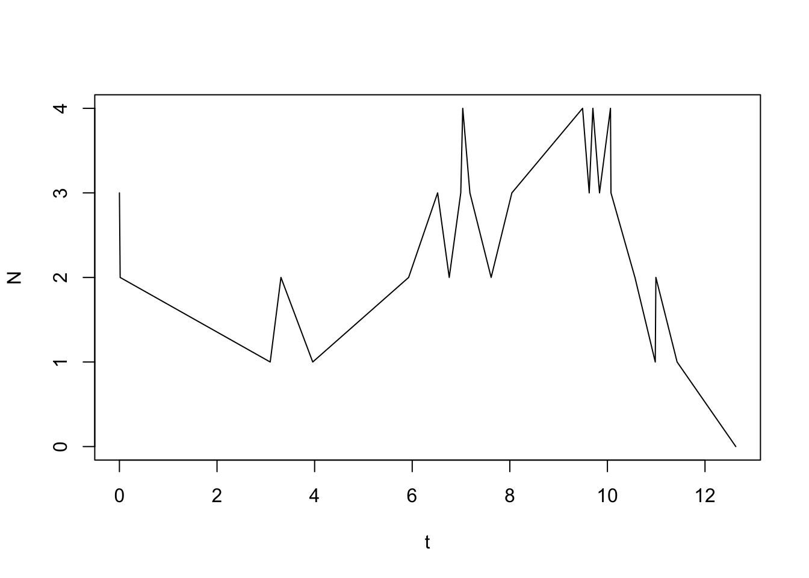
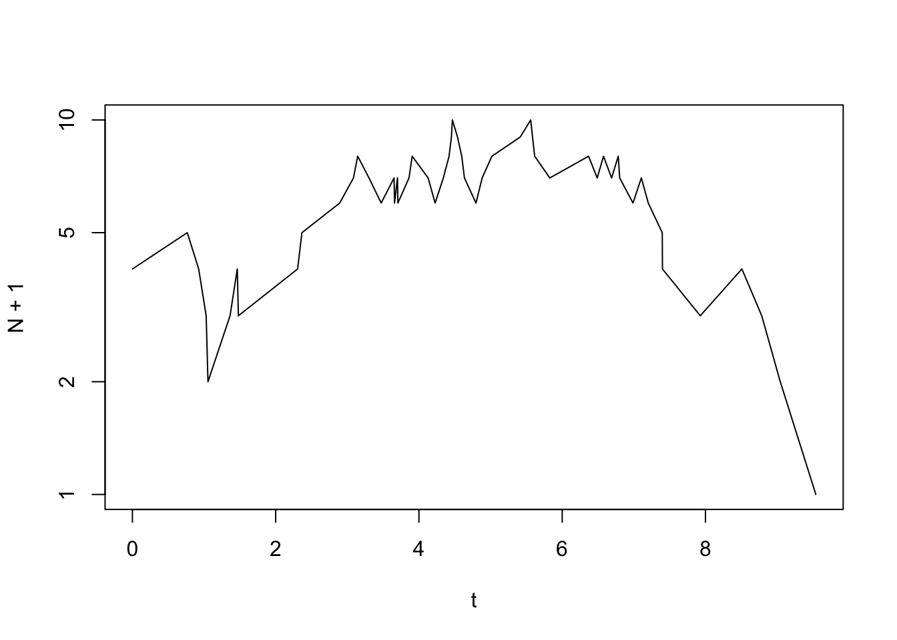
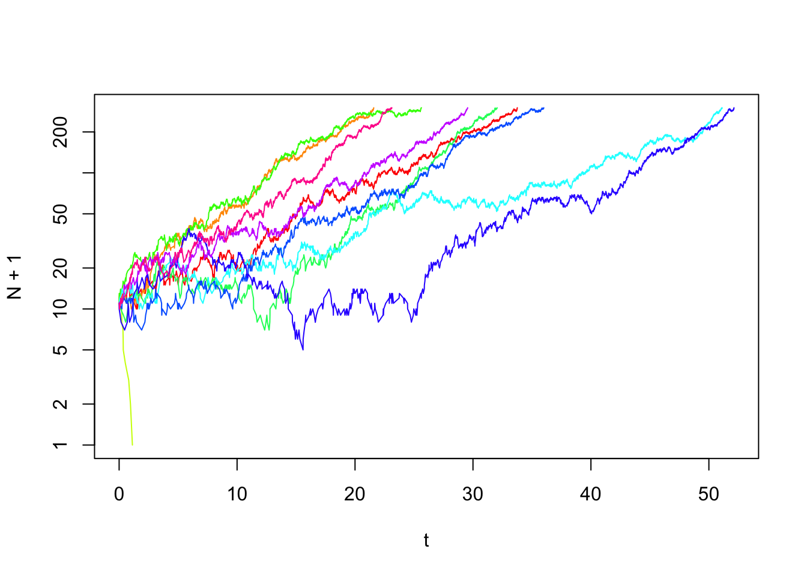

In this exercise, you will explore through stochastic simulations a simple birth-death process. In the lecture, we have seen that the deterministic equation for exponential growth,
\[ \frac{\mathrm{d}N}{\mathrm{d}t}=N(b-d)=Nr, \] describes the mean over many simulations. These simulations take into account that, even if all individuals in a population are genetically identical, they with still differ in the number of their offspring and their age at death. This is due to chance events (some people are hit by a falling tree while others are not…). Fluctuations due to such chance events acting at the level of the individual is called demographic stochasticity. In this exercise, you will explore the consequences of demographic stochasticity for population viability.
The following piece of R-code defines a function that creates a stochastic population dynamical time series. The function has four arguments: N0 (the initial number N(0) of individuals in the population), Nmax (when the simulated population has reached this number the simulation stops; the simulation will also stop once the population has gone extinct (N=0)), birth (the per capita birth rate) and death (the per capita death rate).
time.series <- function(N0, Nmax, birth, death){# this defines a functino with the name "time.series". It has four arguments: N0, Nmax, birth, death
N <- N0
t <- 0
output <- data.frame(t,N) # creates a data frame in which we can store the results from the simulation
while (N < Nmax & N > 0) {# loop runs until N=0 or N=Nmax
dt <- rexp(1, rate = death*N+birth*N) # time to next event, this is a bit different then the algorithm I explained in the lecture, more later...
event <- sample(c(-1,1), 1, prob = c(death*N, birth*N)) # determines which type of event happens by drawing a random number
t <- t + dt # updates time
N <- N + event # updates population size
output <- rbind(output, c(t,N)) # updates output data.frame
}
return(output)
}We can evaluate the funciton by writing
time.series(3, 10, 0.6, 0.5)## t N
## 1 0.0000000 3
## 2 0.5337574 2
## 3 1.0697914 3
## 4 1.1282563 4
## 5 1.2596319 3
## 6 1.3290961 4
## 7 1.7448521 5
## 8 1.7637690 6
## 9 1.8758167 7
## 10 1.9615985 8
## 11 1.9678667 7
## 12 2.1134554 6
## 13 2.1658615 5
## 14 2.4499970 4
## 15 2.4633085 5
## 16 2.5109054 6
## 17 2.5828974 7
## 18 2.6340528 8
## 19 2.8368949 9
## 20 2.9033979 10Thus, in this case we have N0=3, Nmax=10, birth=0.6, and death=0.5. The output of the function is a matrix with two columns. The first column gives the time an event occurs and the second column gives the updated population size. Each time you evaluate the function you obtain a different output. This is due to the stochastic nature of the simulation. Let us visualize a time series (now for Nmax=200).
data<-time.series(3,200,0.6,0.5)
plot(data, type="l")
Maybe in your particular simulation the population went extinct? If so, execute the function again to see whether it might then have reached Nmax before going extinct. Since we are dealing with a stochastic version of exponential growth we might want to plot the population size on a log-scale.
plot(N+1 ~ t, data, log="y", type="l")
You can vary the parameters N0, Nmax, birth and death and investigate their effect on the time series, more specifically, whether or not it experiences extinction.
What is the effect of our chosen set of parameters on the probability that the population size reaches N=Nmax before it goes extinct (N=0)? To investigate this we have to look at many realisations of the simulation and it is easier to do this by automatising this process. We start by setting the parameters where we add one additional parameter, sim, that determines how many times the simulation is repeated.
N0 <- 10
Nmax <- 300
birth <- 0.6
death <- 0.5
sim <- 10 # this sets the number of simulationsWe first store the data from the 10 simulations in a list.
results <- list() # a list variable to save results of all iterations of the function time.series
iter <- 1 # intialize counter
for (i in 1:sim) {# to create sim different simulations, we embedd the function time.series in a for-loop
results[[iter]] <- time.series(N0,Nmax,birth,death) # adds the result of a simulation to the results
iter = iter + 1
}In the next step, we print the results. Before we can do this we have to determine the length of the x-axis (time) in the plot. We do that by determining the length of the longest simulation run.
maxt <- numeric(sim) # creates a vector in which we store the length of the different time series
for (i in 1:sim) {
maxt[i] <- max(results[[i]][1]) # determines the length of the ith time series and stores the result in the object maxt
}
tmax <- max(maxt) # the length of the longest time series is assigned to the parameter tmaxNext comes the code that produces the plots.
cl <- rainbow(length(results)) # sets number of colours equal to number sim
plot(N+1 ~ t, results[[1]], type="l", log="y", ylim=c(1,Nmax),xlim=c(0,tmax), col=cl[1]) # plots the first simulation
for (i in 2:sim) {# this for-loop adds all further simulations to the same graph
lines(N+1~t, results[[i]],type="l", col=cl[i])
}
This results in a figure showing ten simulation runs. From this figure, you can visually count how many of these runs resulted in extinction and how many in exponential growth.
Investigating the probability of extinction in dependence of three different parameters (N0, birth, death) is a bit cumbersome. Let us therefore set the death rate equal to 1 (death=1) and only vary N0 and birth. Vary birth according to birth = (0.9; 1; 1.1; 1.2; 1.5) and initial population size N0 according to N0 = (1; 3; 5; 10; 50). Varying both parameters together gives you 25 different parameter combinations that you can arrange in a table with five rows (N0) and five columns (birth). In each cell of this table, report the proportion of ten runs that result in extinction. Please also think which conclusions you can draw from your results about the effect of N0 and birth on the probability of extinction? Are there parameter combinations that you feel you need to add to your analysis to get a better understanding?
As we have seen in the lecture, an analytical prediction for the extinction probability is given by the formula \[ u(N_0)= \begin{cases} 1 & \mathrm{for}\,\,\, b\leq d\\ (\frac{d}{b})^{N_0} & \mathrm{for}\,\,\, b>d. \end{cases} \] Calculate the probability for extinction according to this formula for each of the parameter combinations in your table and enter these results in a second table. How well do the results from your simulations and from the above formula agree?